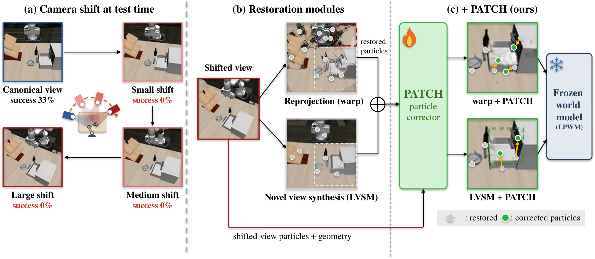
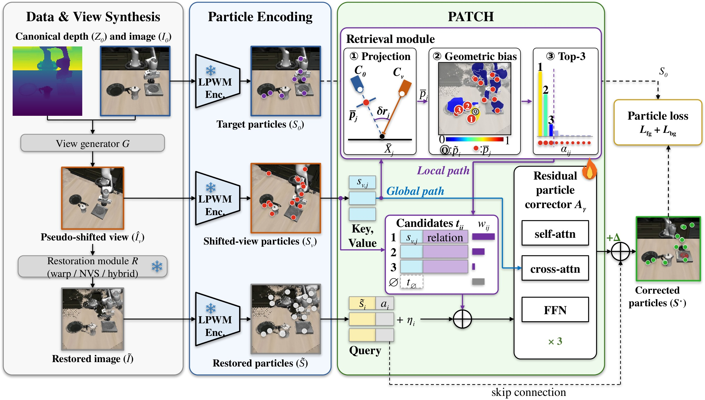
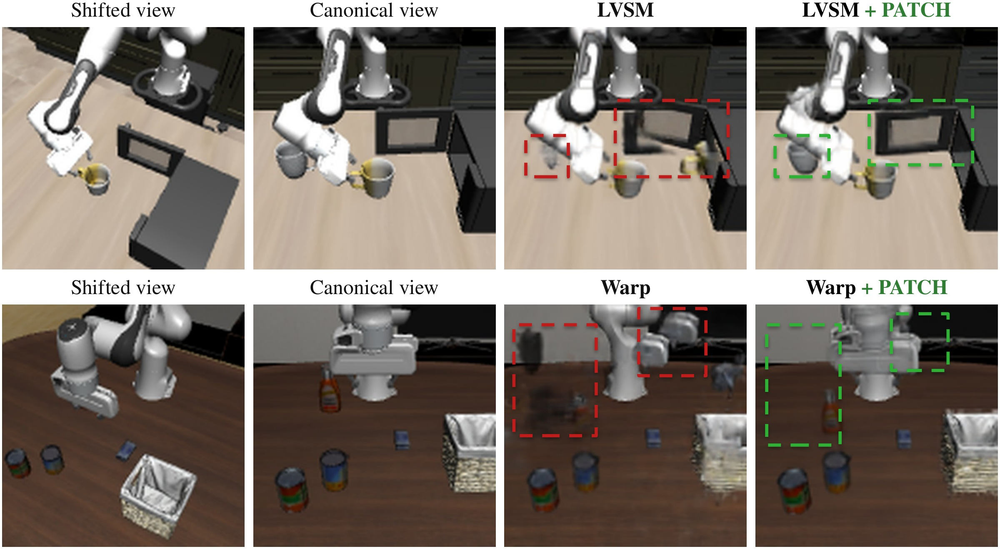
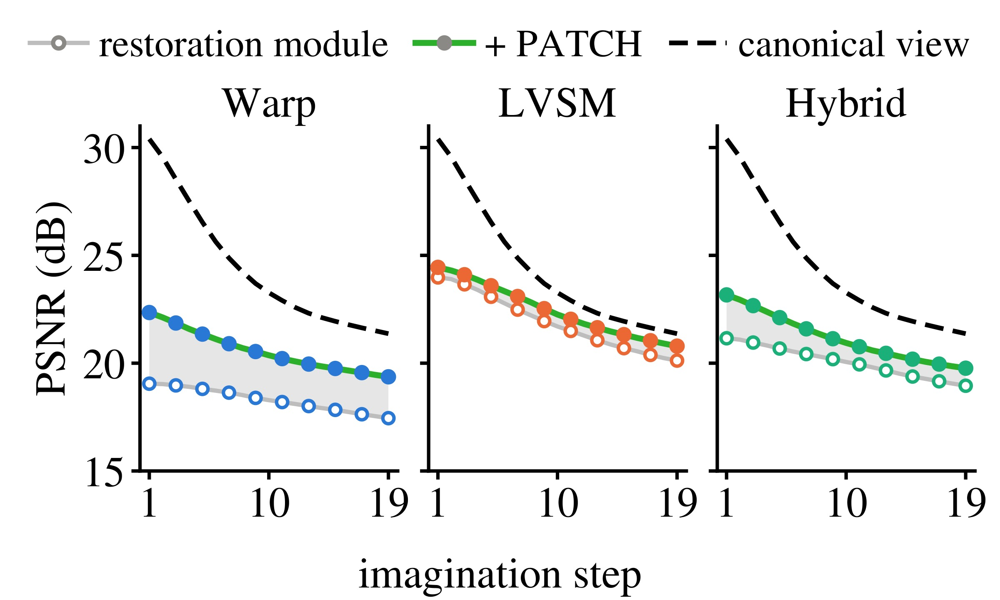
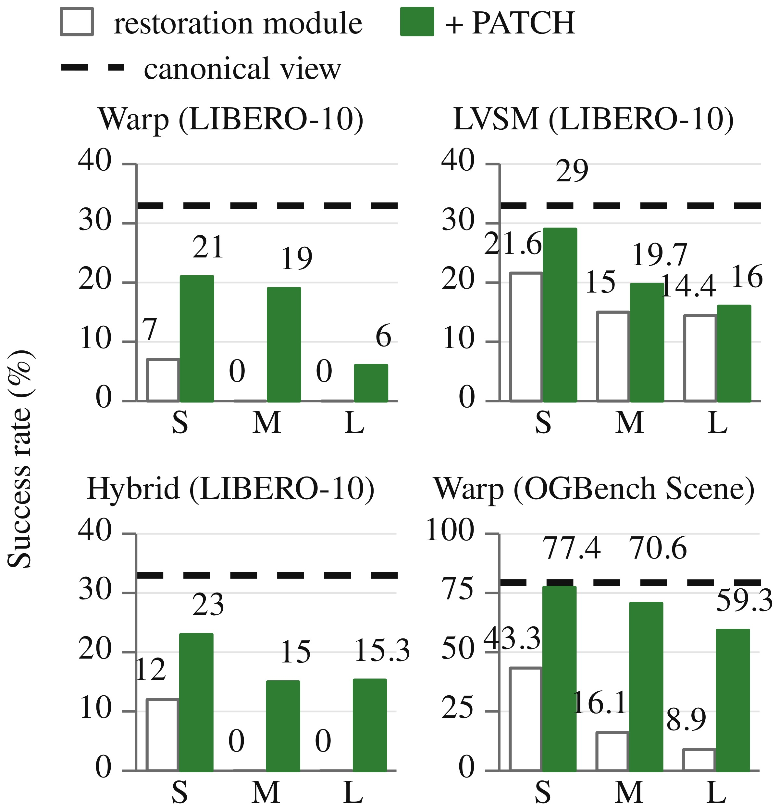

Beyond View Canonicalization:
Particle-Space Correction for Robust World Models
Abstract
We introduce PATCH (Particle Adaptation for Test-time Camera sHift), a lightweight corrector that keeps a frozen particle-based world model usable when the camera moves at inference. Particle-based world models decompose an image into object-level particles and predict how they evolve, and a goal-conditioned policy turns the imagined trajectory into actions. Trained with a single fixed camera, such a world model receives out-of-distribution particles under a camera shift, and on the LIBERO-10 tasks that the policy solves at the canonical view, its success rate drops from 33% to 0% under every tested shift.
Restoration modules map the shifted view back to the canonical view by depth reprojection (warp) or novel view synthesis, but fill unseen regions with synthesized content or render objects incorrectly. These errors become errors in particle attributes and degrade both the prediction and the task success. Given the depth and relative pose of the shifted camera, PATCH follows any restoration module and corrects the restored particles in particle space, using geometry to find the shifted-view particles that observe the same location.
Across three restoration modules and three magnitudes of camera shift on LIBERO-10, PATCH improves the PSNR of the restored input by 0.73–2.43 dB and of the prediction by 0.46–1.06 dB. It also more than doubles the closed-loop success rate on LIBERO-10 (7.8% → 18.2% on average) and raises it from 22.8% to 69.1% on OGBench Scene with warp.
Canonicalization is not enough
On a real robot the viewpoint changes whenever the camera is remounted or the workspace is moved, but retraining the world model at the new view would require a costly new dataset. View canonicalization avoids retraining by mapping the shifted-view image back to the canonical view at inference. Every restoration module, however, leaves a characteristic error:
- Depth reprojection (warp) leaves the regions unseen from the shifted view as holes, and the holes grow with the shift.
- Inpainting fills those holes with content that is synthesized rather than observed, and can differ from the actual scene.
- Novel view synthesis (NVS) produces images without holes, but can render objects incorrectly and place them at geometrically inaccurate positions.
The world model encodes the restored image into particles, so these errors enter the imagination as errors in particle attributes.

A policy that solves 33% of LIBERO-10 tasks at the canonical view drops to 0% under every tested shift.
Method

The local path retrieves shifted-view particles by geometry as candidates; the global path attends to all of them. 0.73M parameters, trained on canonical-view data only.
Each particle carries its position as image coordinates, so depth and the relative camera pose give the canonical-view location of every shifted-view particle in closed form — something a single scene latent or a slot-based representation does not allow. PATCH exploits exactly this property:
- Retrieval. For each restored particle, geometry projects the shifted-view particles into the canonical view and selects the few that observe the same location.
- Correction. A 3-layer transformer decoder applies self-attention among the retrieved particles, cross-attention to all shifted-view particles without geometric bias, and a feed-forward network. A learned null token lets a restored particle ignore the candidates when none of them observe its location.
- Residual output. The corrector outputs a residual added to the restored particle, so each attribute is corrected rather than regenerated.
Where does a restored particle read from?
Geometric bias vs the local and global paths of PATCH. White ring: the geometrically correct location. Geometry used only for retrieval finds the corresponding observations without forcing a wrong correspondence in regions the shifted view never saw.
PATCH fixes what the world model reads and imagines

Large shift, LIBERO-10. Red boxes: largest errors of LVSM and warp. Green boxes: the same regions after PATCH.

Large shift, LIBERO-10. PATCH raises the PSNR of the imagined frames for every restoration module.
Video Presentation
Closed loop under camera shift
Left, large: the real environment where the robot acts. Top row: restoration alone. Bottom row: + PATCH. Both rows start from the same initial state.
LIBERO-10, medium shift, LVSM: fails alone, succeeds with PATCH.
OGBench Scene, medium shift, warp: fails alone, succeeds with PATCH.
LIBERO-10, large shift, hybrid: fails alone, succeeds with PATCH.
LIBERO-10, medium shift, warp: fails alone, succeeds with PATCH.

PATCH improves every restoration module at every shift: on average 7.8% → 18.2% on LIBERO-10 and 22.8% → 69.1% on OGBench Scene.
BibTeX
@article{seok2026patch,
title={Beyond View Canonicalization: Particle-Space Correction for Robust World Models},
author={Seok, Kwanghoon and Lee, Jongmin},
journal={arXiv preprint},
year={2026},
url={https://kwanghoon-seok.github.io/patch-project}
}